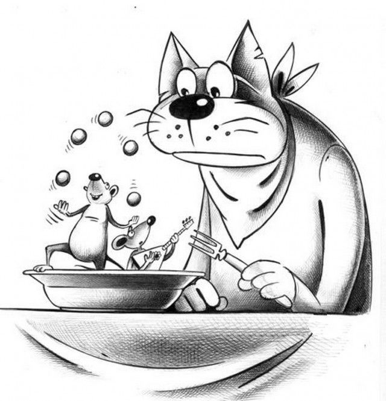

ТЕЛЕСКОП
Ш К О Л Ь Н А Я Г А З Е Т А
Миссия проекта: Школьная газета "Телескоп" является внутренним учебным и
информационным проектом Воскресной школе храма Св. Тихона и Православной певческой гимназии
"Люблино". Печатное
издание "Телескоп" производит контент разных форматов в учебных,
образовательных,просветительских целях в соотвествии со стандартами
качественной журналистики.
Выпуск №4 (2020-2021 учебный год) 07 ноября 2020, Суббота
Уважаемые читатели!
Вот и начались школьные будни. И карантин, и
пережить? Предлагаем Вам немного отвлечся.
Наши авторы приготовили Вам интересные материалы.
С уважением,
команда редакции журнала "Телескоп"
Наша почта
zhurnal.teleskop@yandex.ru
Стихи
Прощание с летом
Кузьмина София
Прощаемся с летом,
С весельей свободой...
осень, и зиму, почти всю
весну...,
Котёнок
Ерасова Таня
Иллюстрация к поэзии А.С.Пушкина
Ивлева Екатерина
Октября уж наступил-уж рощя отряхает
Последнии листы с нагих своих ветвей;
Дохнул пследний хлад-дорога промерзает.
Журча ещё бежит за мельницу ручей...

Про моего кота
Прохоров Никита,
Ивлева Екатерина,
Солодовникова Александра
У меня есть белый кот,
И его зовут Компот
Спит о много.Ест как
слон
Обжора
Ивлева Екатерина
Мы сидели. долго ели
Вдруг пришлрсь варить
пельмени,
Наконец пельмени есть...
На странице 2


Про моего кота
Прохоров Никита,
Ивлева Екатерина,
Солодовникова Александра